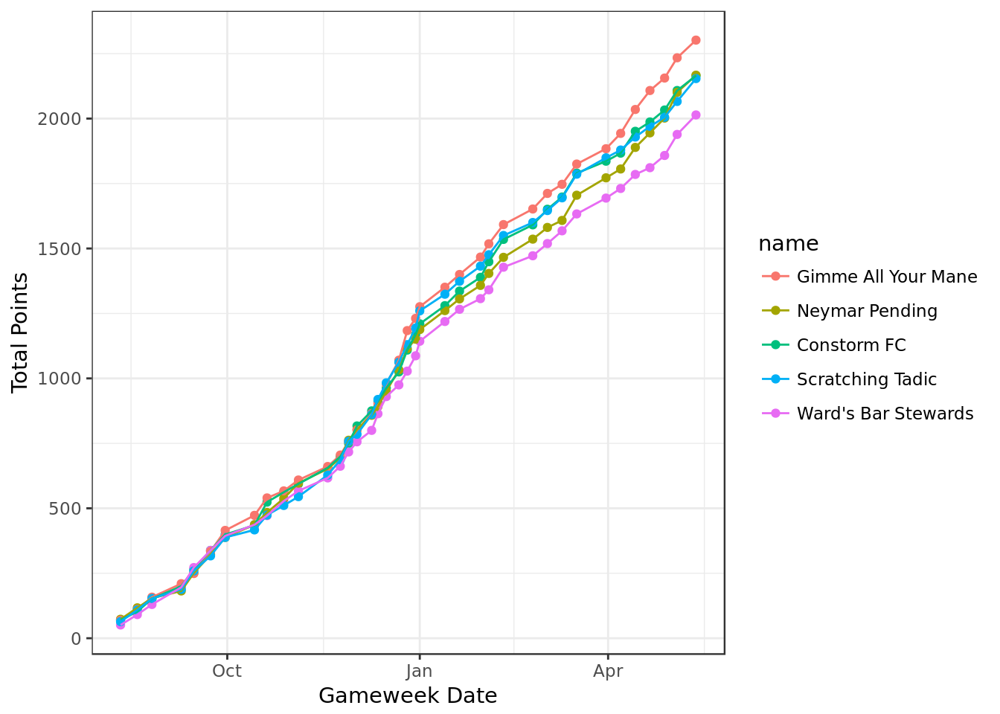
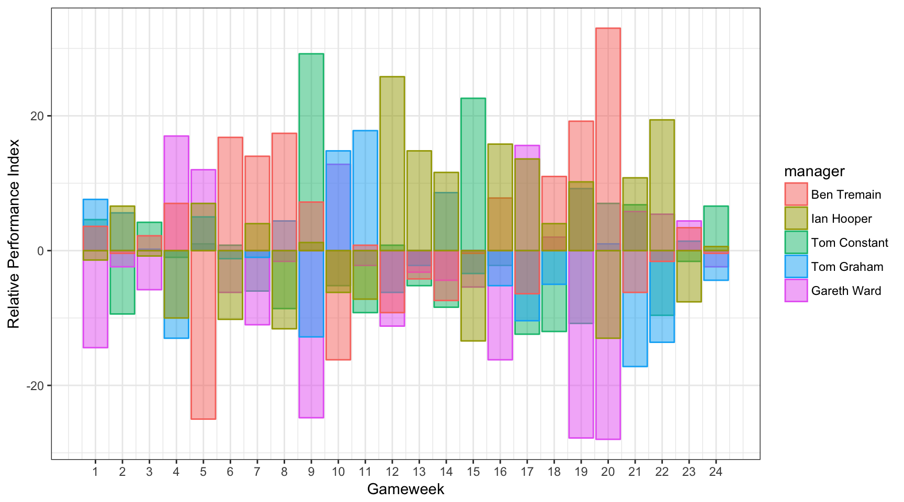
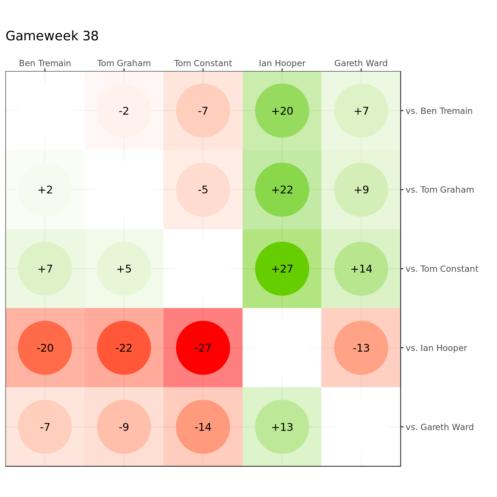
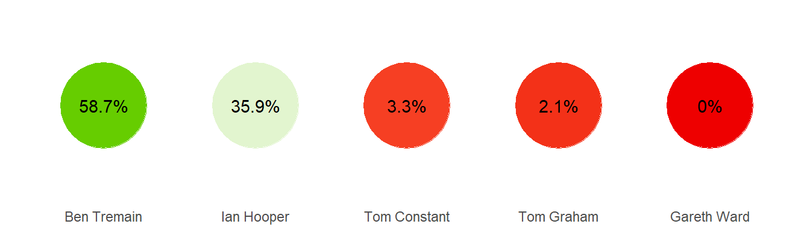
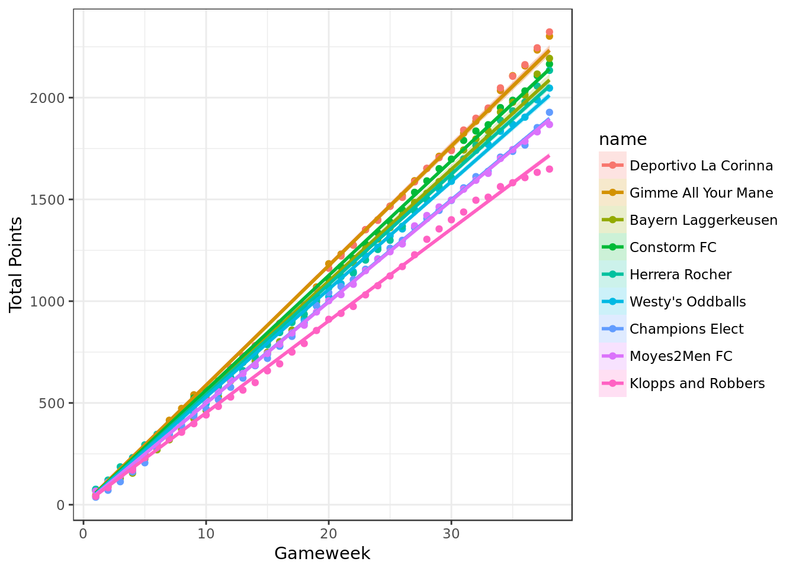
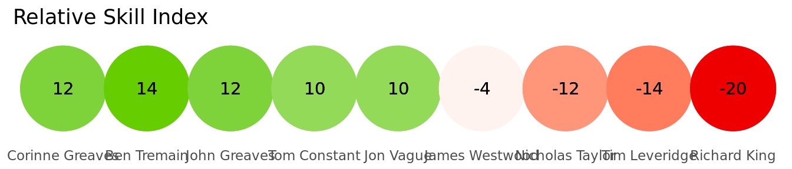
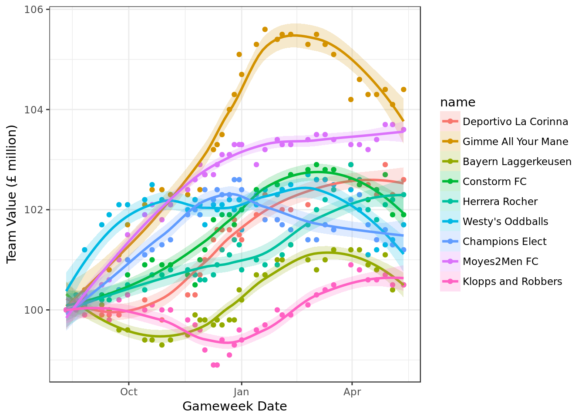
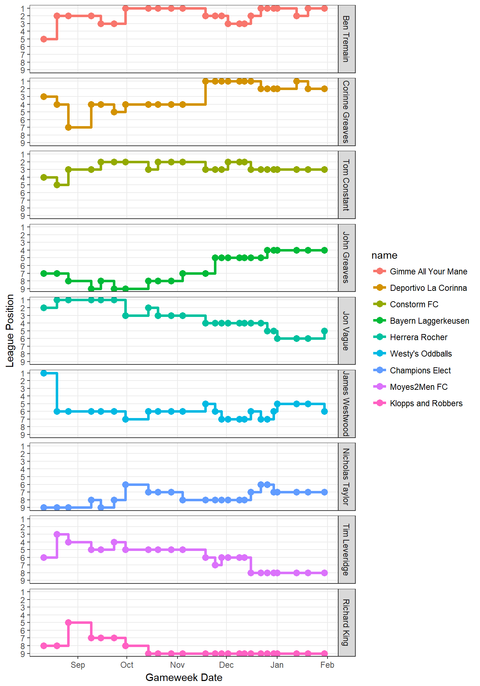

Fantasy Football 2017/18
Tom Constant
Current Ratings
Updated 2018-01-30 17:00:27
Physics Fantasy Football
Table: Physics Fantasy Football
| pos | manager | team | gameweek.points | total.points |
|---|---|---|---|---|
| 1 | Ben Tremain | Gimme All Your Mane | 49 | 1400 |
| 2 | Ian Hooper | Scratching Tadic | 50 | 1374 |
| 3 | Tom Constant | Constorm FC | 56 | 1336 |
| 4 | Tom Graham | Neymar Pending | 45 | 1306 |
| 5 | Gareth Ward | Ward’s Bar Stewards | 47 | 1266 |
Plots: Physics Fantasy Football
Cumulative Score

Linear Regression

Linear Regression: Recent Form (Last 5 GW)

Relative Performance Index

Gain Loss Matrix

Team Value
## `geom_smooth()` using method = 'loess'
Point Distribution By Manager
Based on these probability distributions, and simulating 1000 different season outcomes for the remaining gameweeks, the percentage of seasons won by the players is as follows:

Mini League Positions

UoE Premiership
Table: UoE Premiership
| pos | manager | team | gameweek.points | total.points |
|---|---|---|---|---|
| 1 | Ben Tremain | Gimme All Your Mane | 49 | 1400 |
| 2 | Corinne Greaves | Deportivo La Corinna | 45 | 1397 |
| 3 | Tom Constant | Constorm FC | 56 | 1336 |
| 4 | John Greaves | Bayern Laggerkeusen | 48 | 1305 |
| 5 | James Westwood | Westy’s Oddballs | 42 | 1265 |
| 6 | Jon Vague | Herrera Rocher | 52 | 1254 |
| 7 | Nicholas Taylor | Champions Elect | 51 | 1208 |
| 8 | Tim Leveridge | Moyes2Men FC | 57 | 1207 |
| 9 | Richard King | Klopps and Robbers | 45 | 1076 |
Plots: UoE Premiership
Cumulative Score

Linear Regression

Linear Regression: Recent Form (Last 5 GW)

Relative Performance Index
Gain Loss Matrix

Team Value
## `geom_smooth()` using method = 'loess'
Point Distribution By Manager

Based on these probability distributions, and simulating 1000 different season outcomes for the remaining gameweeks, the percentage of seasons won by the players is as follows:

Mini League Positions
